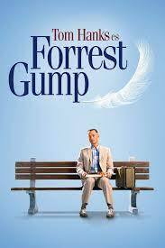
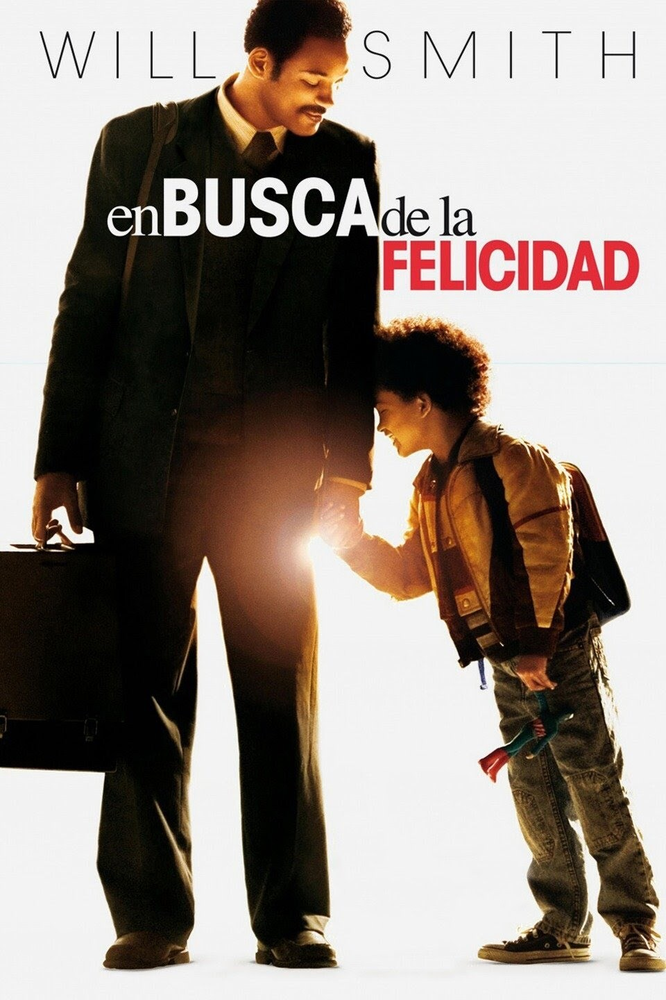
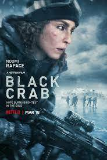
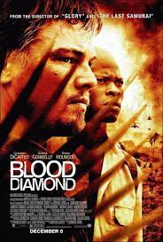
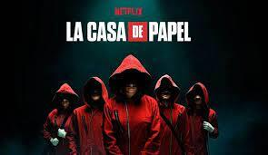

Forrest Gump
Sentado en un banco en Savannah, Georgia, Forrest Gump espera al autobús. Mientras éste tarda en llegar, el joven cuenta su vida a las personas que se sientan a esperar con él. Aunque sufre un pequeño retraso mental, esto no le impide hacer cosas maravillosas. Sin entender del todo lo que sucede a su alrededor, Forrest toma partido en los eventos más importantes de la historia de los Estados Unidos.

EN BUSCA DE LA FELICIDAD
Chris Gradner es un hombre que, decidido a dar una vida mejor a su familia, inicia un negocio que no acaba bien. Chris se queda en paro, su mujer le abandona y le quitan la casa. Este padre soltero tendrá que luchar por una vida mejor para su hijo.

CONGREJO NEGRO
Para poner fin a una guerra apocalíptica y salvar a su hija, una soldado emprende una misión desesperada: transportar un cargamento ultrasecreto por un mar helado. Ve todo lo que quieras. Noomi Rapace ('Prometheus', 'Siete hermanas') protagoniza este thriller de acción

DIAMANTE DE SANGRE
Dos hombres de vidas tan distintas tienen un objetivo común: la búsqueda de la valiosa piedra, que puede hacer que ambos cambien de vida.

LA CASA DE PAPEL
La casa de papel es una serie española que se ha convertido en una de las mayores ficciones sobre atracos jamás vista.
La serie, que cuenta con 34 episodios divididos en cinco temporadas, trata sobre el espectacular asalto, por parte de una banda de delincuentes, de la Fábrica Nacional de la Moneda y Timbre, en las dos primeras entregas, y del Banco de España, en la tercera, cuarta y quinta.
La combinación de los géneros de acción, intriga y thriller junto a su atractivo argumento y el peculiar carácter de sus personajes la convierten en la serie española más exitosa de todos los tiempos.
